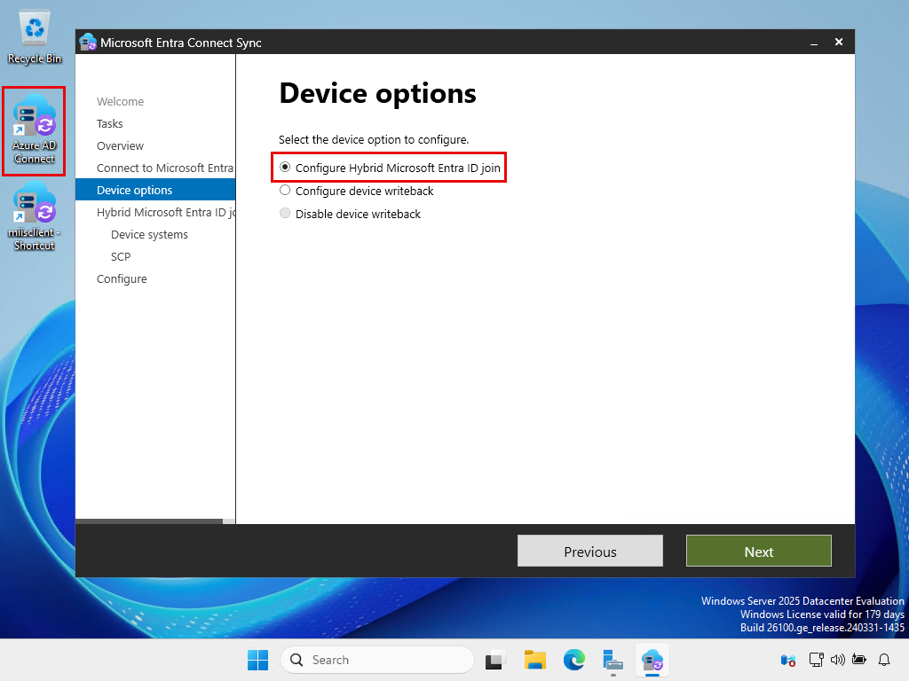
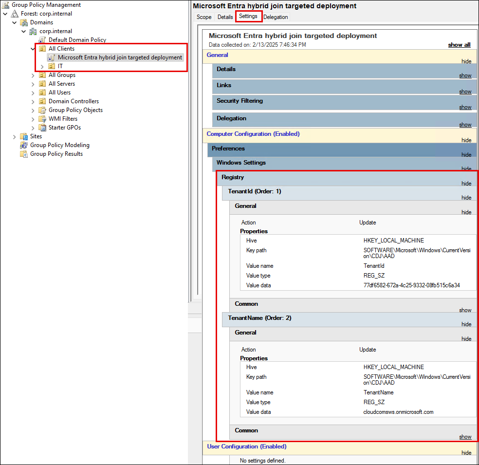
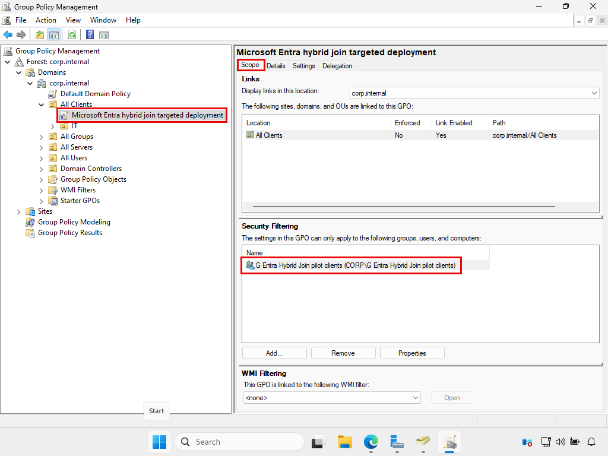
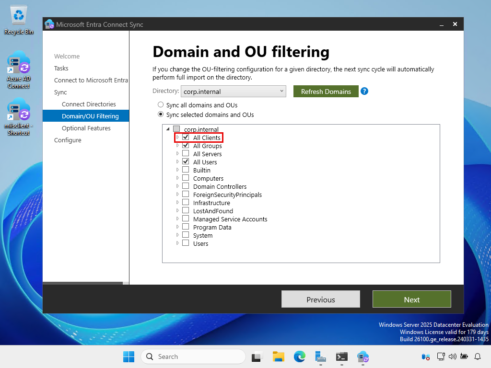
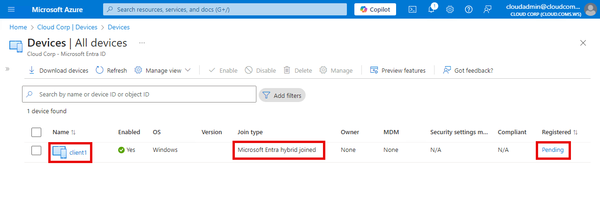
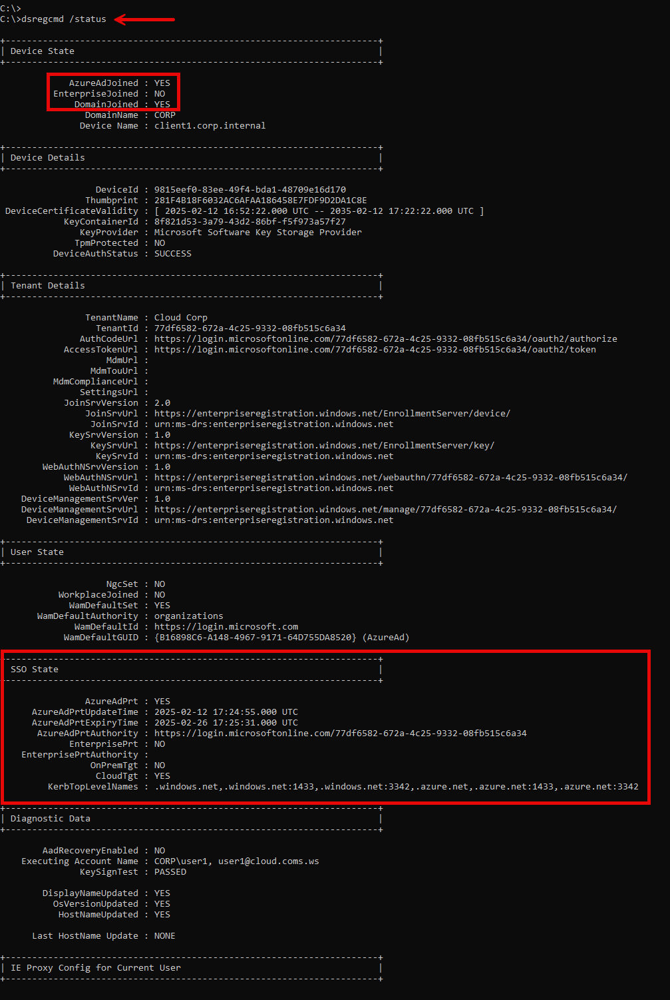
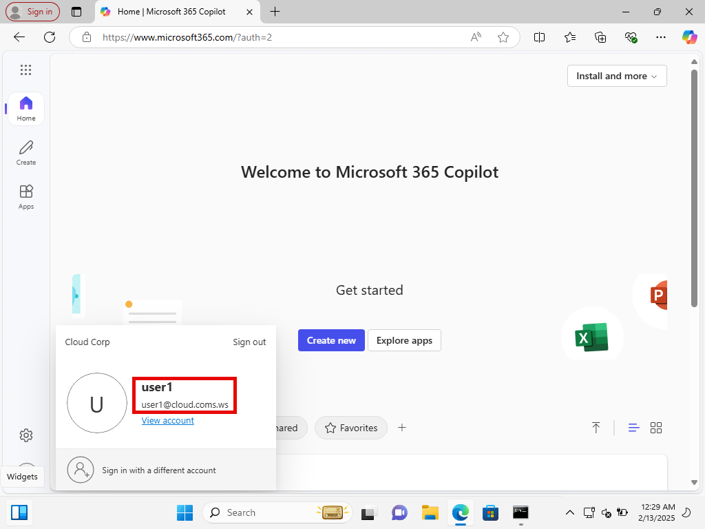

Microsoft Entra hybrid join targeted deployment
ปัจจุบัน เครื่องคอมพิวเตอร์ส่วนใหญ่ยัง join on-premises AD DS อยู่ เราสามารถนำเขาไป join Entra ID โดยอัตโนมัติได้ด้วยการ enable Entra Hybrid Join
แต่เรามี 2 ทางเลือก
-
ทางเลือกที่ 1 - รีรัน Entra Connect เพื่อสร้าง SCP (Service Connection Point) object ลงใน AD DS ให้ทุกเครื่องที่ join domain มองเห็น ตาม Configure Microsoft Entra hybrid join

-
ทางเลือกที่ 2 - ทำให้ device แค่บางเครื่องรู้จักข้อมูลของ tenant ผ่านค่า registry บนเครื่อง เช่น deploy ค่าผ่าน GPO ตาม Microsoft Entra hybrid join targeted deployment
แล้ว device จะใช้ข้อมูล tenant จาก SCP (ใน AD DS) หรือ registry (บนเครื่อง) เข้าไปทำ Entra Hybrid Join ต่อไป
Entra Hybrid Join จะช่วยให้เครื่องที่ join on-premises AD DS มี identity ใน Entra ID และได้รับประโยชน์จาก SSO, สามารถเป็นสมาชิกของ device group เพื่อนำไป assign สิทธิ์อย่างอื่นต่อได้, ใช้ทำ device-based authentication ใน Conditional Access, และอื่นๆ เป็นต้น
และเนื่องจาก CSoG เราเน้นให้ทุกคนสามารถเริ่มต้นใช้งานบริการต่างๆ ด้วยตัวเองได้ โดยไม่กระทบกับระบบที่ใช้งานอยู่เป็นวงกว้าง
ดังนั้น ในคู่มือนี้ จึงเป็นรายละเอียดของทางเลือกที่ 2 เพื่อทำ Entra Hybrid Join แบบ targeted deployment นะครับ
1. Create a pilot device group
สร้าง device group สำหรับ pilot Entra Hybrid Join

2. Configure GPO settigs to enable Entra Hybrid join targeted deployment
1. Copy ค่า Tenant ID และ Tenant name เพื่อนำไปใช้ใน GPO


2. สร้าง GPO และตั้งค่า settings ตาม Configure client-side registry setting for SCP
แล้ว link ไปที่ device OU ที่เราต้องการ enable Entra Hybrid Join ให้กับ device ภายใต้ OU นั้น

3. ที่ Security Filtering ของ GPO
- ลบ Authenticated Users ออก (เพื่อไม่ให้ GPO apply เข้าหาทุกเครื่องภายใต้ OU)
- แล้วเพิ่ม pilot device group เข้าไป (เพื่อให้ GPO apply เข้าหาเครื่องที่อยู่ใน group นี้เท่านั้น)

ที่ tab Delegation, ให้สิทธิ์ Read กับ Authenticated Users

3. Configure Entra Connect scopes to sync device objects to Entra ID
รีรัน Entra Connect

แล้วเลือก OU ที่มี device ที่ต้องการ sync ไปยัง Entra ID

ตอนนี้ เราตั้งค่าสำหรับทำ targeted deployment ครบถ้วนแล้ว
ดังนั้นเราไปทดลองทำ Entra Hybrid Join ให้กับ pilot device เครื่องแรกกันนะครับ
4. Test a pilot client
4.1 Move a pilot device to a synced OU, add to the pilot device group, and restart the client
1. ย้าย client มาอยู่ใน OU ที่ถูก sync ขึ้น Entra ID

2. เพิ่ม client เข้าไปเป็นสมาชิกของ pilot device group

3. แล้ว restart เครื่อง client เพื่อให้เครื่องได้รับ SID ของ group

4.2 Nothing to do, just wait until success
เมื่อ restart กลับมา เราไม่ต้อง sign in ก็ได้นะครับ
เพียงแค่รอเท่านั้น
เพราะว่า client ทุกเครื่องจะมี scheduled task ชื่อว่า Automatic-Device-Join รันอยู่
Task รันด้วย computer account (SYSTEM) ไม่ใช่ user account
และต่อให้เราไม่ sign in เข้าเครื่อง task ก็จะรันทุกๆ 1 ชั่วโมงอยู่ดี

เมื่อเราปล่อยให้ task ทำงานด้วยตัวเอง เขาจะค้นหาข้อมูลของ tenant จากค่าใน registry (ที่ deploy ผ่าน GPO มา)
เมื่อพบข้อมูลของ Tenant เขาจะ generate self-signed certificate ขึ้นมา แล้วส่งส่วนที่เป็น public key ไปแปะไว้ใน computer object ของตัวเองใน AD DS

จากนั้นเมื่อ Entra Connect (ที่ทำงานทุกๆ 30 นาที) พบ computer object ที่มีค่า userCertificate ก็จะ sync computer object นั้นขึ้นไปยัง Entra ID
อย่างไรก็ตาม เครื่องจะยังมี state เป็น Pending อยู่นะครับ

แต่เราก็ไม่ต้องทำอะไรก็ได้อีกเช่นกัน
เราแค่รอต่อไป
แล้วอีกไม่เกิน 1 ชั่วโมงถัดไป Automatic-Device-Join task ก็จะรันอีกครั้ง (รันทุกๆ 1 ชั่วโมง หรือเมื่อมี user sign in เข้าเครื่อง)
แล้วเขาก็จะนำเครื่องเข้าไป authentication กับ Entra ID อีกครั้ง แล้วกลายเป็น Entra Hybrid joined device โดยสมบูรณ์ครับ

4.3 Test SSO
เมื่อเครื่องเป็น Entra Hybrid join devices โดยสมบูรณ์แล้ว
เราก็ลอง sign in เข้าเครื่อง

ก็จะพบว่า ตอนนี้เราได้รับ Primary Refresh Token (PRT) (ดูที่ SSO State) แล้วนะครับ
dsregcmd /status

และ app บนเครื่องก็จะนำ PRT นี้ไปทำ SSO เข้าใช้งาน app หรือบริการต่างๆ ที่ใช้ Entra ID เป็น identity provider ต่อไป

5. (Optional) Speed up the process
บางครั้ง ในการทดสอบ pilot device เราก็คงไม่อยากรอให้ Entra Hybrid Join process เสร็จสมบูรณ์ด้วยตัวของเขาเอง
แต่เราอยากเร่งความเร็วของ process ให้เสร็จเร็วขึ้น
ดังนั้น จาก Microsoft Entra hybrid joined in Managed environments

เรามาลองเร่งความเร็วของ process ด้วยตัวเองดูนะครับ
1. Sign in เข้าเครื่อง
เริ่มจาก ไม่ต้องรอ ถ้าเครื่องได้รับ GPO แล้ว ให้เรา sign in เข้า Windows เพื่อ trigger ให้ Automatic-Device-Join task รันเลย

เครื่องจะ generate self-signed certificate แล้วส่งส่วนของ public key ไปแปะไว้ใน computer account ของตัวเองใน AD DS

2. Force Entra Connect sync
Entra Connect จะทำงานทุกๆ 30 นาที เพื่อ sync object ไปยัง Entra ID
แต่ให้เรา force sync เลย ไม่ต้อรอ

แล้ว client จะถูก sync ไปยัง Entra ID แต่ state จะยังเป็น Pending อยู่
3. Manual รัน Automatic-Device-Join task
แล้วเราก็ manual รัน Automatic-Device-Join task บน device (โดยไม่ต้องรอให้ task รันเองทุกๆ 1 ชั่วโมง)
เพื่อนำเครื่องเข้าไปทำ authentication กับ Entra ID อีกครั้ง

และเครื่องก็จะกลายเป็น Entra Hybrid joined device โดยสมบูรณ์ ในเวลาอันรวดเร็วตามที่เราต้องการครับ
สิ่งที่ควรทำต่อไปในอนาคต
หลังจากทดสอบ targeted deployment แล้ว เราก็จะ
- ทยอยเพิ่มเครื่องเข้าไปใน pilot device group เพื่อทดสอบเพิ่มเติม
- และ configure Entra Connect sync scopes เพื่อ sync computer object ของเครื่องเหล่านั้นขึ้นไปยัง Entra ID ด้วย
แล้วในที่สุดถ้าเรามั่นใจแล้วว่า Entra Hybrid Join ไม่ส่งผลกระทบต่อการทำงานของเครื่อง client ส่วนใหญ่ เราอาจจะลบ GPO Entra Hybrid Join ออก
แล้วรีรัน Entra Connect เพื่อสร้าง SCP ลงใน AD DS ให้ทุกเครื่องที่ join domain เห็นต่อไป ตาม Configure Microsoft Entra hybrid join
ซึ่งตัวอย่างของ SCP object ที่ถูกสร้างโดยการรีรัน Entra Connect ก็จะมีหน้าตาประมาณนี้นะครับ